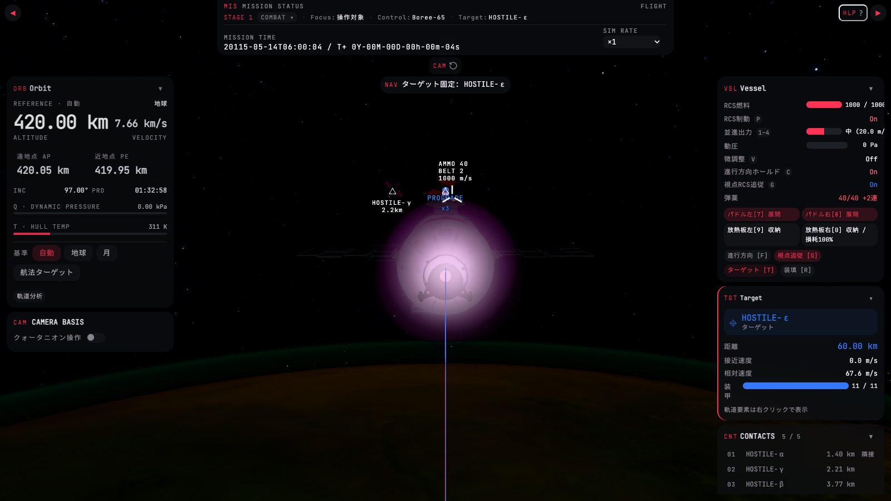
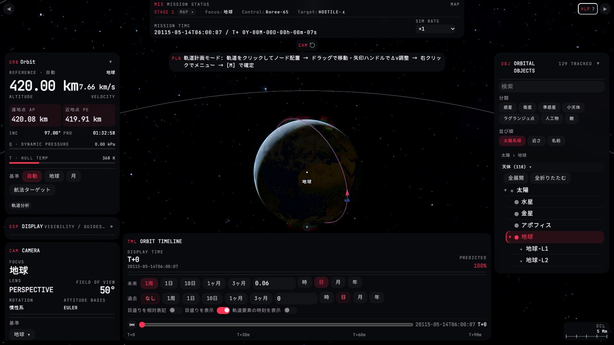
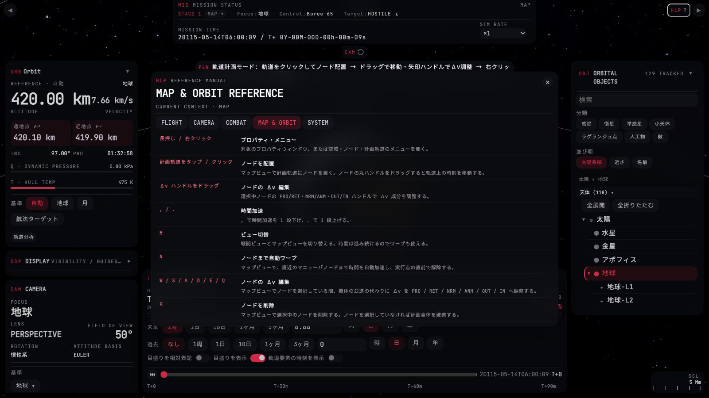
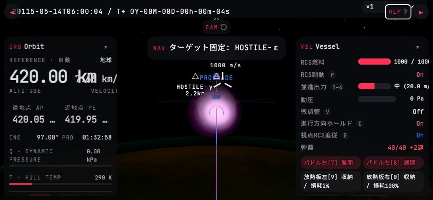
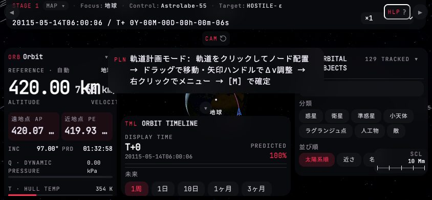

ゲーム UI の改修に使うデザインリファレンス。現行の画面を撮影したものを出発点に、ゼロベースで設計し直した改修後の姿を、 ゲームの実ソースから書き出したトークンとウィジェットの CSS で組んである。各ページの「比較」で現行と改修案をワイプで見比べられ、 番号つきの注記が、そのまま「どのファイルの何を変えるか」の指示になる。上の「配色」はゲームと同じ11プリセットを切り替える。
REFページ
01 表示の文法色を意味で引く・1行の文法・状態とキー・メーター・強弱3段・警報。全ページが共有する規則と、配色プリセットの衝突検査。
02 戦闘ビュー上部ストリップ・照準まわりの読み値・武装の帯・レールの並べ替え。
03 マップビュー巨大な下部タイムラインを、掴んで動かす1本の時間軸へ。物体一覧と左レールの整理。
04 レールのパネル艦・ターゲット・敵一覧・軌道・物体一覧を、レール幅で現行と1対1に。状態のバリエーションと src の対応。
05 警報と通知通知の棚卸しと、警報灯・警報帯・通知・案内チップへの振り分け。平常 → 注意 → 警告 → 解消。
06 ウィンドウとモーダルプロパティウィンドウ・ESC メニュー・ヘルプ・確認。
07 スマホ横持ち844×390 の戦闘・マップとタッチ操作。
AUD現行 UI の監査
- 主役色の過負荷。主役色がセクション記号・ON 表示・主要ボタン・メーターの塗り・選択中のタブ・開閉ボタンを兼ね、警告色とほぼ同色。満タンの燃料が危険と同じ赤で出る。
- 値の切れと折返し。右レールで艦ステータスの値が右端で切れ、ターゲットの「装甲」が縦に折れる。
- ショートカット表記が4通り。
P・1–4・ラベル内の[7]・ボタン内の[F]。 - 状態の表し方が3通り。文字色の On/Off、トグルスイッチ、点灯ボタン。
- 上部の全体ステータスが重い。820×100px の2行に見出しばかりが並ぶ。
- 中央の衝突と、撃つ判断の遠さ。自機の周りで文字が重なり、距離・接近速度は右レールにある。
- 艦ステータスの責務過多。計器・モード・弾薬・展開部品・推力段・操作ボタンが1枚に同居。
- マップの下部タイムラインが巨大。960×280px の大半が期間ピルで、時間を掴む操作は細いスライダー1本。
- 案内が文章の帯。計画モードの案内が長文で中央上部を塞ぐ。
- スマホ横持ちで崩れる。上部ステータスと HLP が重なり、値が切れ、案内帯が物体一覧に重なる。
CUR撮影した現行画面







PRN改修の原則
色は意味で引く中立=データ / 主役色=自分 / 第二色=ターゲット / 注意 △・警告 ▲。正常値は色を持たない。
1行の文法[ラベル] [メーター] [値 単位] [キー]。値は切らない。縮むのはメーター → ラベルの順。
状態は形で、キーは1種でON/OFF は状態ピップかトグル。ショートカットはキーキャップ1種。
強弱は3段主読み値(パネルの答え)/行/補足。
周辺は静かに撃つ判断に要る値は照準の近くへ。レールは参照用。
警報は1箇所上部の警報灯と中央上部の警報帯だけ。案内はキーと語の短いチップ。
基盤は変えないガラス面3段・ウィジェット11種・置き場4種はそのまま。色の値は増やさず、意味の別名だけを足す。
改修の順序・土台の作り直し方・決めていないことは README.md。